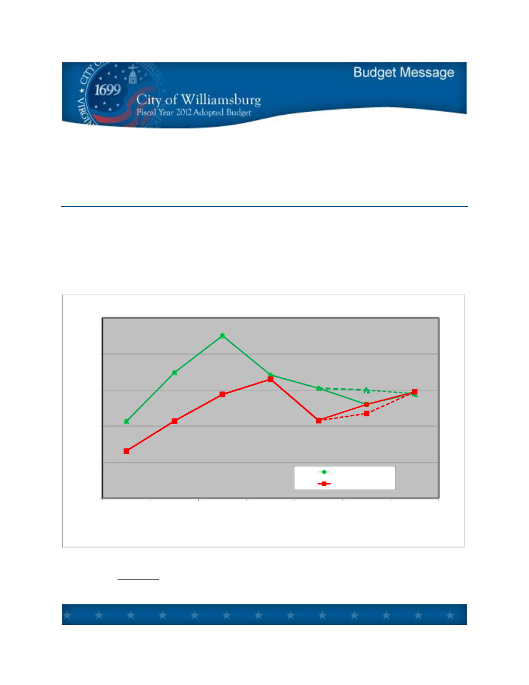
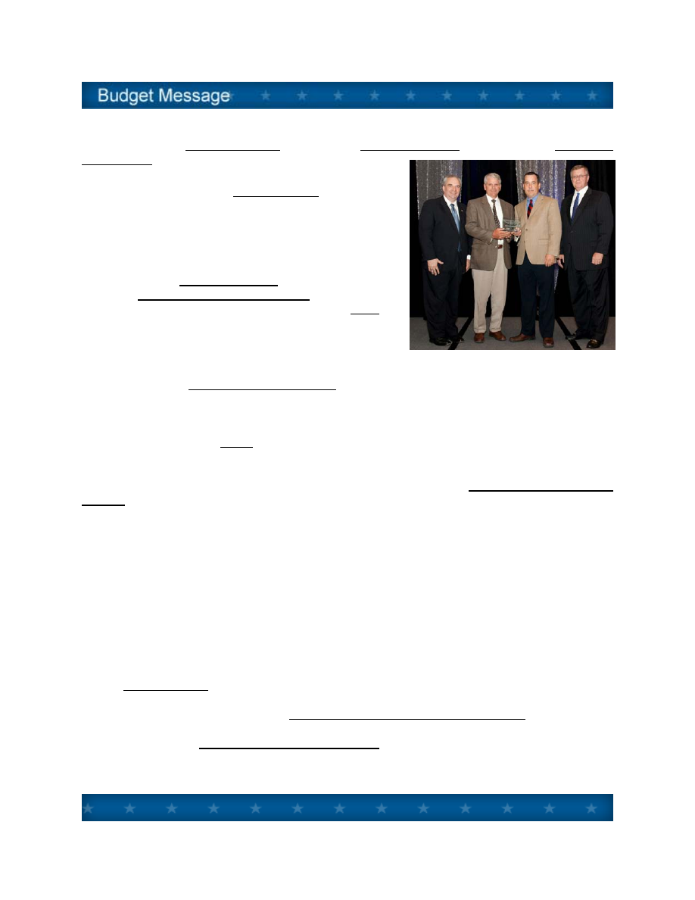
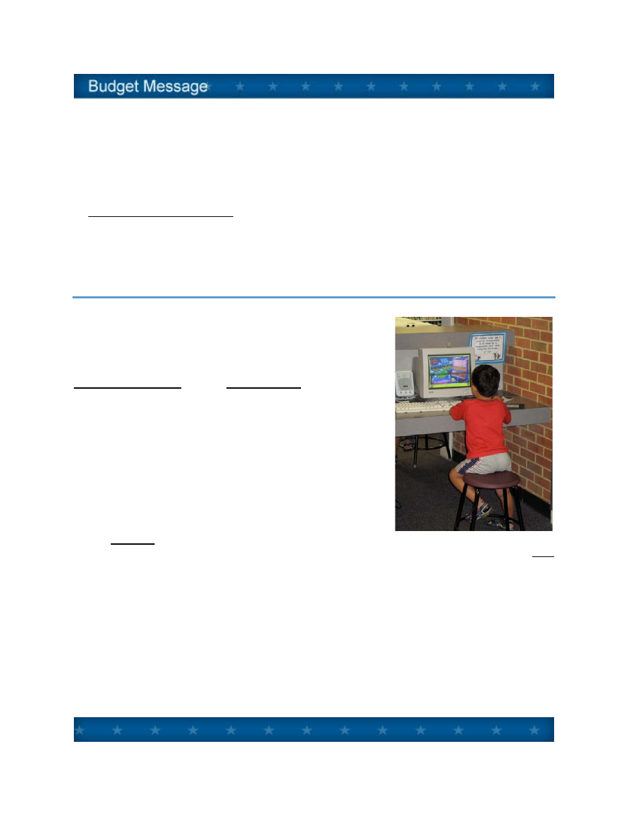
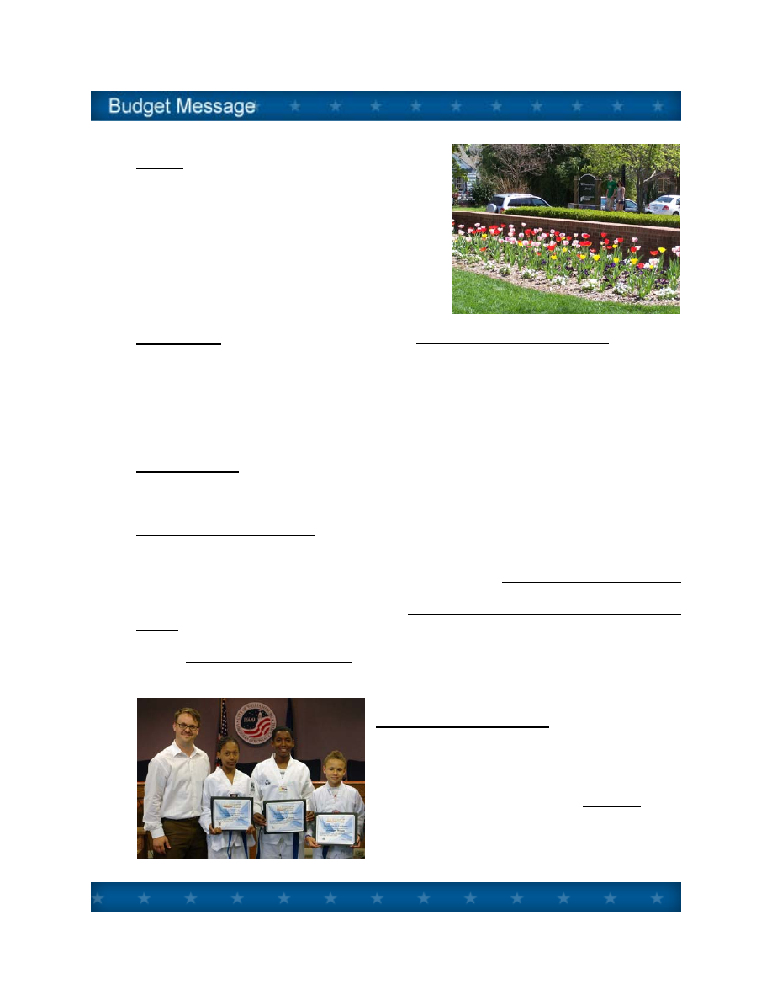
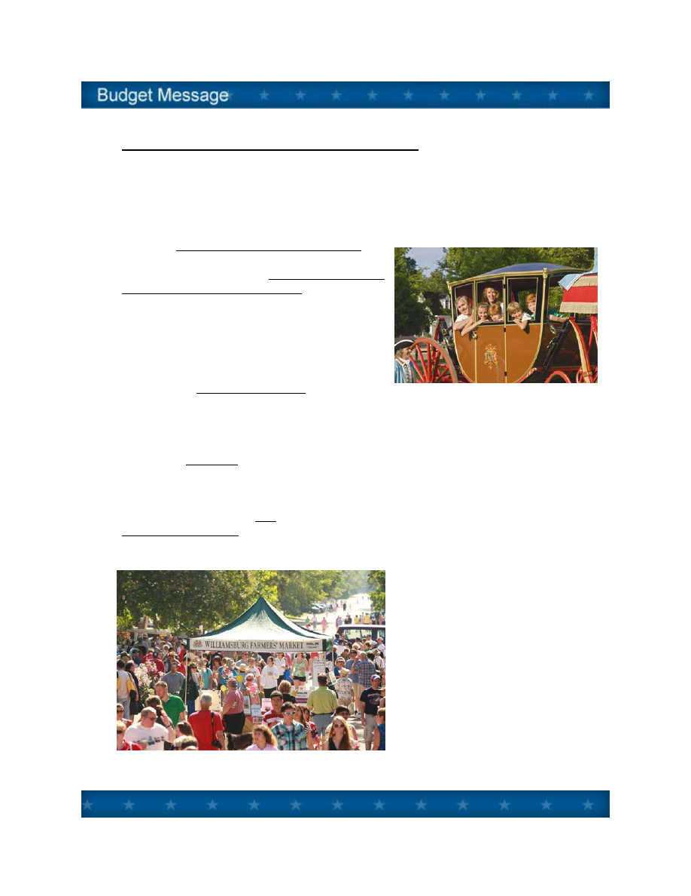

TO:
Mayor and City Council
DATE:
March 18, 2011
SUBJECT:
City Manager’s Budget Message
INTRODUCTION
Last year at this time the great recession of 2008 persisted and reflected a continued decline in
Williamsburg’s budget outlook.
During the first eight months of the current fiscal year, fortunately, the picture has begun to brighten.
The chart below tells the story. It shows a steep decline in both income and spending from the
peak fiscal year 2008 through 2010, followed by a leveling in fiscal years 2011 and 2012.
$26
$28
$30
$32
$34
$36
FY 2006
Actual
FY 2007
Actual
FY 2008
Actual
FY 2009
Actual
FY 2010
Actual
FY 2011
Adopted
FY 2012
Proposed
Revenues
Expenditures
General Fund History and Outlook
Next year we anticipate a modest increase of 1.9% in adopted General Fund operating revenue,
although still 6.5% less than the budget adopted a full three years ago (Fiscal 2009). It will likely
take many years to equal the revenue results in Fiscal 2008 when over $35 million was collected.
Dashes = Estimated Revenues & Expenditures for FY 2011
$ Millions

Lt. Gov. Bolling Presents Governor’s Technology Award
Nevertheless, through these stressful times, Williamsburg has succeeded in at least three ways. It
has maintained its financial strength, advanced its ambitious agenda, and focused on measuring
performance.
*
As an indicator of financial health, Williamsburg
obtained its first general obligation bond rating ever
– AA+ Standard & Poor’s and Aa1 Moody’s – and
issued $10.64 million to refund existing debt at an
interest rate of 2.75%.
*
As for the ambitious agenda, City Council adopted
its Goals, Initiatives and Outcomes for the 2011 and
2012 Biennium in November 2010. The GIOs set
forth ten major goals, 78 concrete initiatives, and 69
outcome measures and National Citizen Survey
ratings. (See City Council Goals Section B)
*
Concerning performance measurement, Williamsburg’s Performance Management System
recently won the 2010 Governor’s Technology Award for “IT as Efficiency Driver,” and the
2010 International City/County Management Association (ICMA) Center for Performance
Measurement “Certificate of Distinction.” Performance metrics, in addition to the outcome
measures in the GIOs, are incorporated into this budget. (See Performance Metrics
Section C)
Looking now at the overall picture for the year ahead, the Proposed General Fund Operating
Budget can be summarized by:
Projected Revenues of $31,783,737, up by 1.9%.
Planned Spending of $31,872,170, up by 2.2%.
Reserves brought forward of $88,433 to fund in part appropriated contingencies.
No recommended change in Tax Rates, no other General Fund fee or tax increases.
Full time equivalent authorized positions of 183, reduced from 202 in FY 2009 to 182 in FY
2011.
In the Utility Budget, $5,754,250 in operating revenues are projected, a 2.3% decrease.
Recommended is a 2.5% Water and Sewer rate increase, from $4.20 to $4.30 per one thousand
gallons, beginning July 2011, per the Five Year Water and Sewer Rate Analysis.
In the General Fund Capital Improvement Program, a total of $3,948,000 is projected in new
capital spending, plus $1,144,898 in debt service payments, for a total of $5,092,898. (See
Capital Improvements Section E)
A - 2

The combined total of the four funds – General Operating Fund, Utility Fund, Sales Tax/Capital
Fund and the Public Assistance Fund – amounts to $45,892,081.
With the above as an overview, the remainder of the Budget Message discusses issues particularly
helpful in understanding and reviewing the proposed budget, beginning with General Fund revenue
projections.
REVENUE PROJECTIONS
Next year (FY 2012) we forecast General Fund operating revenues of $31,783,737, a 1.9%
increase from the current year (FY 2011) budget amount. Looking at four broad categories:
Share of
Budget
FY 2011
Adopted
FY 2012
Proposed
Change
All Property Taxes
39%
$ 12,695,020
$12,355,150
(2.7%)
Other Local Taxes
44%
$ 13,140,600
$13,920,600 5.9%
Fees, Charges,
Miscellaneous
8%
$ 2,585,184
$2,588,177
0.1%
Intergovernmental
9%
$ 2,761,091
$2,919,810
5.8%
In the Budget Guide (Section F) are detailed explanations of revenues, explaining the legal basis
and ten year trends of all revenue sources. The following is a summary of significant revenue
changes in next year’s budget under the four categories:
1. Property
Taxes. Property tax projections are based on a total anticipated value of real
estate of $1.756 billion dollars, a decrease from current land book values of 3.9%, reflecting
the persistent soft real estate market. Assuming no change in the tax rate of $.54 per
hundred dollars of assessed value, we estimate real property tax collections of $9,400,000
next year.
Other property taxes include personal property (car tax) and business property. All property
taxes (real and tangible) taken together are expected to generate $12,355,150, a 2.7%
decrease.
2.
Other Local Taxes. Other local sources of taxation include various consumer utility taxes
and franchise fees, business licenses, transient lodging and prepared food or "room and
meal" taxes. Taken together, other local taxes will generate $13,920,600, a 5.9% increase
from the current year budget amounts.
A - 3
The estimate for room and meal tax collections totals $3,400,000 for room tax, a 6.3%
increase; and $5,900,000 for meal tax, a 9.3% increase, from last year’s adopted budget.
These estimates reflect an upturn from last year’s poor performance, but still below 2008
levels. The room tax estimate does not include the $2.00 destination marketing surcharge
for additional tourism promotion, which is a separate line item in the budget of $1.5 million.
Taken together, all local sources of taxation, property and other local taxes, are expected to
generate $26,275,750, a 1.7% increase from the current year budget.
3.
User Fees, Charges, and Miscellaneous. This broad category of locally generated
revenue is expected to generate $2,588,177, nearly level with the current year. No changes
in fees for licenses and permits, nor for charges for service, are proposed in the budget.
4.
Intergovernmental - Revenue from the Commonwealth. Revenues from the state
government in the amount of $2,919,810, which includes support for constitutional officers
and various categorical grants, are estimated to increase by 5.8%, based on our predictions
of final state action on the FY 12 budget.
The estimate of Sales Tax for Education of $856,098, based on State Department of
Education calculations, is up by 10.8%, driving much of the increase in this category.
EXPENDITURE ISSUES
Next year we have proposed General Fund operating expenditures of $31,872,170, an increase of
2.2% from the current year adopted budget. Broken down in four large categories:
Share of
Budget
FY 2011
Adopted
FY 2012
Proposed
Change
City Departments
54%
$16,891,441
$17,052,319
1.0%
Constitutional Officers
and Judicial
7%
$ 2,031,791
$ 2,216,678
9.1%
Education and Library
25%
$ 7,744,648
$8,090,601
4.5%
Outside Agencies
14%
$ 4,514,015
$4,512,572
0%
Details on operating expenditures can be found under Budget Summaries (Section D). Highlights
of significant expenditure issues are divided between “City Operational Issues” and “Outside
Agency Issues.”
A - 4

City Employees Receive Service Awards
CITY OPERATIONAL ISSUES
1. Staffing. The total number of full time equivalent
(FTE) positions authorized in city departments decreased
from 202 in FY 09 to 182 in FY 11. The reduction has
been and will be accomplished through transfer and
reorganization (including the 13 positions transferred to
York County as part of the E911 consolidation), job
consolidations, and reductions in force. Next year we
recommend adding back one police officer position for an
FTE total of 183.
2. Salary Ranges and Pay. No additional funds have been budgeted for general employee pay
raises or salary range increases since July 1, 2008, three years ago. The proposed budget
includes an allowance of $175,000 in the General Fund, and a comparable amount in the Utility
Fund, for compensation purposes. This amount equals nearly 2% of payroll and payroll driven
expenses. It is premature, however, to decide how this allowance should be deployed until we
know reliably what will happen with health coverage costs next year, as discussed below.
In principle, if funds are available in the Compensation Allowance after health care is covered, then
this money can be deployed for merit pay raises. Per the Personnel Manual, merit pay is awarded
based on 1) an employee’s annual performance evaluation, 2) the incumbent’s standing within the
pay range, and 3) known market conditions. For comparison, the Consumer Price Index in calendar
2010 rose 1.7%.
It is important to recognize that our employees have been primarily responsible for the city’s strong
financial performance since the recession hit. Without any appreciable reduction in service, and
with high and still improving performance ratings in the 2010 National Citizen Survey; annual
surpluses of $1.8 million in fiscal 2010 and $1.3 million estimated in Fiscal 2011, were achieved by
the policies of City Council and the performance of city staff.
3. Health Coverage. The city’s largely self-insured health care plan through Anthem has risen in
cost dramatically in recent years. Over a five year period from 2005 to 2010 employee health care
plan costs rose 75%, from $990,611 to $1,731,882. The City now pays 84%, and employees pay
16%, of the expense. Last year we issued a Request for Proposal to look at alternative providers
and found no taker other than Anthem. For next year, Anthem’s preliminary estimate is for another
cost increase in the 12% to15% range. The proposed budget includes an allowance for a 10%
increase.
Therefore, the city should
Wait to get the final premium number from Anthem,
Take another look at a competitive alternative, specifically by getting a quote from the
Commonwealth of Virginia’s “Local Choice” program,
A - 5

Reassess the city/employee share formulas,
Reassess plan benefits and features, and
Make a final determination on health care spending in conjunction with a final determination
of the amount available for pay adjustments.
A decision needs to be made by June 15 for July 1 implementation.
4. Virginia Retirement System. The contribution level set by VRS for Williamsburg in fiscal 2012
will remain at 16.44% of payroll. The latest actuarial valuation of our pension plan (2010), however,
shows an actuarial accrued liability of $55.6 million, and an actuarial value of assets of $42.6
million. The actuaries now deem our plan 76.6% funded. Therefore, we can anticipate in increase
in the contribution rate in FY 2013, although the amount is unknown at this time.
OUTSIDE AGENCY ISSUES
Nearly one-half of the city's General Fund budget goes to
agencies and activities not under City Council's direct
operational control. Funding relationships are often complex,
and vary in degrees of funding discretion possible from year to
year. The "Notes on Funding Relationship," contained in the
Budget Summaries and the Budget Guide (Sections D and
F), help explain the city's role in providing financial support to
these agencies and activities.
Background documentation from outside agencies is provided in
the Appendix of the Proposed Budget, or provided under
separate cover or electronically, as in the case of the School and
the Library budgets.
A number of issues concerning outside agency funding requests
for the coming year need to be highlighted:
1.
Schools. Based on the Superintendent’s proposed budget, and expectations of State
funding, we should expect a city contribution to the operational budget in the amount of $7.3
million, 4.6% increase from the current year. The final amount will be determined by
formula as set forth in the current five-year city/county Joint School Agreement, effective
since July 1, 2007.
The city’s school population has increased (from 791 to 828), while the county’s has been
nearly level (from 9,640 to 9,679). City children numbering 828 now account for 7.88% of
the children enrolled in the system. Under the Joint School Agreement, in FY 12 the city
pays a share equal to its enrollment times a factor of 1.14. So, the city continues to pay a
premium to participate in the joint system.
A - 6

2.
Library. The Williamsburg Regional Library is
funded under the revised library agreement with
James City County, effective July 1, 2006. That
agreement calls for funding of operational costs
based on the proportion of circulation by residency.
Based on the library’s figures, the city/county
circulation ratio to be applied in FY 12 is 16.1%
city, and 83.9% county. The Library’s proposed
budget of $5,763,840 is a decrease of 0.2%, which
will result in an increased city contribution of
$775,576.
3.
Regional Jail. Funding the city’s share of the Virginia Peninsula Regional Jail is expected
to be $1,269,018, up 16% from the current budget. State cuts in jail funding continue to
drive up local jail costs. The city share of jail costs is based on the average usage rate over
the past five years. Each member jurisdiction (Williamsburg, James City County, York and
Poquoson) pays for their share of the inmate population, based on location where the
offense occurred and the arresting authority. We expect to pay 18% of local jail costs this
coming year.
4.
Health Services. The four agencies named below provide health services to city residents,
workers and visitors. The total recommended funding for FY 12 is $439,677, nearly level
with the current year.
The Peninsula Health District budget request to the city is $91,038, a 1.5% decrease from
the current year.
The Human Services Advisory Board has recommended Olde Towne Medical Center
(Williamsburg Area Medical Assistance Corporation or WAMAC) receive funding of $83,430,
the same as the current year; and that the Comprehensive Health Investment Program
(CHIP) receive level funding of $19,349.
Finally, Colonial Behavioral Health, the agency through which the city provides mental
health and retardation services to its residents, requests an increase, but level funding in
city contribution of $245,860 is recommended again this year.
Human Service Agencies. The city's Human
Services Advisory Board, as requested by City
Council, has evaluated Human Services Agency
requests for funding, and made its
recommendations to City Council. Their analysis
and recommendations are in the Appendix to the
Proposed Budget. Proposed for next year is near
level with the current year for a total amount of
$81,244.
City Youth Achievement Participants Win Tae Kwon Do Scholarships
A - 7

5.
Community and Economic Development Agencies.
Tourism Promotion
The city has supported tourism advertising and promotion through Colonial Williamsburg
and the Greater Williamsburg Chamber and Tourism Alliance.
This year Colonial Williamsburg Foundation has
requested $1,300,000, below FY 10 funding and
above FY 11 funding. The Greater Williamsburg
Chamber and Tourism Alliance, which in turn
lends some support to the advertising campaigns
of the Williamsburg Area Destination and
Marketing Committee (WADMC),has requested
an increase to $725,000. Additionally, the
Williamsburg Hotel & Motel Association has
requested $325,000 to support marketing
through their gowilliamsburg.com website (“pay
per click,” and web display ads).
Last year at this time, due to sharp declines in room tax dollars and the inability to make up
all the difference from other sources, the city decreased its support for CWF and the
Alliance by $250,000, to $1.95 million. For the coming year with an improving room and
meal tax picture, I recommend that the city fund CWF and the Alliance, two thirds/one third,
resulting in $1.3 million for CWF, and $650,000 for the Alliance. I am not recommending
funding for any new agencies, in this case, for the Hotel/Motel Association. In my view, the
city should only support one regional visitation website. The Alliance/WADMC website is
visitwilliamsburg.com. Customer confusion and marketplace dilution results from multiple,
non-destination driven, regional websites.
In terms of relative contributions to
tourism promotion relative to room tax
revenue, the chart below demonstrates
that the city continues to support
regional tourism aggressively through
dollars to the destination’s biggest driver
(Colonial Williamsburg), and to the
region’s visitor/convention promotion
agency (Tourism Alliance). The city
continues to carry more than its share of
the load.
A - 8

$0.0
$0.5
$1.0
$1.5
$2.0
$2.5
$3.0
$3.5
Williamsburg
York County
James City County
Room Tax Receipts FY10
Regional Tourism Marketing Contributions FY10
Room Taxes and Tourism Promotion
The proposed budget also includes an estimated $1,500,000 of pass through funding from
the $2.00 room surcharge to the Williamsburg Area Destination Marketing Committee’s
campaign. This brings the total city tax dollars for tourism promotion to $3,450,000.
Economic and Community Development
In addition to tourism promotion, the city support is recommended for a number of other
agencies that make important economic development and community development
contributions to Williamsburg. These are listed in the Budget Summary section. There are
no significant changes from current year allocations, and no new requests have been
recommended for funding.
6.
Cultural. The Williamsburg Arts Commission
has again performed the task of receiving,
evaluating, and recommending funding for the
arts. Their report is copied in the Appendix to
the Proposed Budget. They recommend local
(Williamsburg, James City County, and state
challenge grant) arts funding of $120,000. Of
this amount, the city contribution would be
$55,000.
$ Millions
A - 9

NEXT STEPS
The budget process now moves from the staff level, formation phase, to the Council and public
level, adoption phase.
The Budget Work Sessions, principally to look at outside agencies, are scheduled for Monday,
March 21 and Tuesday, March 22. The school budget will be reviewed at the either the Monday,
April 11 City Council work session, or at the Thursday, April 14 City Council meeting depending on
availability of the School Board members. The formal budget hearing will be advertised for the April
14 City Council meeting. Adoption is scheduled for the May 12 Council meeting.
Jackson C. Tuttle
City Manager
A - 10